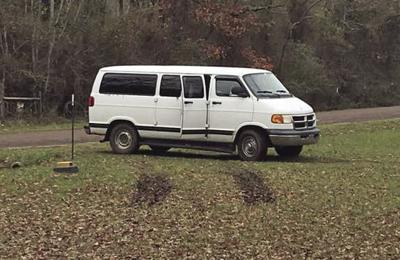

A seventeen year old boy, named Tommy, with his two friends Wilbur and Toby. They lived in a nation called Clayland, the government there wasn't the best, the dictator was manipulative and easily corrupted and only powerhungry. Wilbur and Tommy were troublemakers, they needed to make some money so they wanted to sell some illegal candy to gain a lot of cash. So, they rented a food truck and purchased (misteriously) illegal candy, aka sour patches. So, these two went to an allyway and prepared themselves to be able to sell their candy. "You sure about this Will?" Tommy said, unsure about the idea. "yes, you doubting me Tommy?" Said Wilbur, looking through the packages they have. "no, of course not, but we could go to jail for this, they're banned for a reason Wil" After saying that, Wilbur stopped for a moment, then said : "you wanna do this with me, or no?", Tommy thought for some time, then nodded his head and said : "let's do this together!".
' 